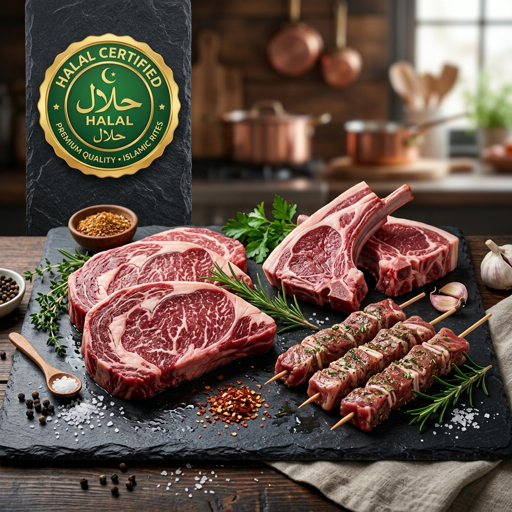

İsveç'te Helal Kesim Et ve Helal Ürünlere Ulaşma Rehberi

İsveç'e yeni gelen Müslüman göçmenler ve Türk vatandaşları için en hassas konulardan biri İsveç'te helal kesim et ve helal sertifikalı ürünleri güvenilir bir şekilde temin etmektir. İsveç süpermarketlerinde genel olarak domuz eti tüketimi yaygın olduğu ve kesim usulleri farklı olduğu için, helal gıdaya ulaşmak ekstra özen gerektirir.
İsveç Yerel Marketlerinde Helal Ürün Var Mı?
ICA, Willys veya Coop gibi büyük marketlerde zaman zaman helal sertifikalı dondurulmuş tavuk veya belirli sosis markaları bulunabilir. Ancak bunlar genellikle sınırlıdır. Kırmızı et, kasap sucuğu veya Kayseri pastırması gibi geleneksel lezzetleri büyük market zincirlerinde bulmak neredeyse imkansızdır.
Helal Et ve Şarküteri Ürünleri Nereden Alınır?
Helal kesim kuzu eti, dana eti ve güvenilir Türk markalarının (Örn: Egetürk, Yayla vb.) sucuk, sosis, pastırma gibi şarküteri ürünleri için en iyi adresler Türk ve Arap bakkallarıdır. Ancak her zaman yakınınızda bu bakkallardan bulunmayabilir.
%100 Helal Garantisi: Yurdum Lezzetleri
İçiniz rahat olsun. Yurdum Lezzetleri, tamamen helal sertifikalı ürünlerden oluşan şarküteri reyonu ile İsveç'in her yerine hizmet veriyor. Soğuk zincir kargo ile sucuk, sosis ve peynirleriniz bozulmadan kapınıza geliyor.
🥩 Helal Şarküteri Ürünlerini İnceleDikkat Edilmesi Gerekenler
- İçerik Etiketleri: İsveççe etiketlerde domuz eti 'Fläsk' veya 'Griskött' olarak geçer. Bilmediğiniz bir ürünü alırken mutlaka içerik okuyun.
- Helal Sertifikası: Ürünlerin üzerinde uluslararası geçerliliği olan "Halal" logolarını arayın.
- Soğuk Zincir: İnternetten şarküteri ürünü alırken firmanın soğuk zincir paketlemesi kullandığından emin olun. (Yurdum Lezzetleri bu konuda garantilidir.)
Daha fazla market ürünü ve diğer kategoriler için Türk Ürünleri Ana Sayfamızı incelemeyi unutmayın.